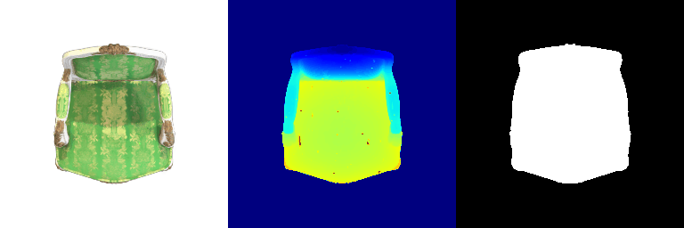
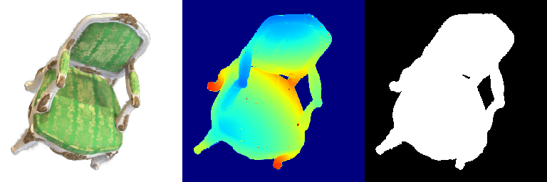
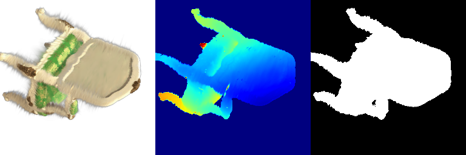

16-825 Computer Vision - Assignment 4
3D Gaussian Splatting & Diffusion-Guided Optimization
Name: [Minghao Xu] | Andrew ID: [mxu3]
1. 3D Gaussian Splatting (60 Points)
1.1 3D Gaussian Rasterization
Deliverable: GIF rendered from a pre-trained Gaussian model.
I implemented the core 3D Gaussian rasterization pipeline, including projection, alpha/opacity calculation, and final blending. The GIF below shows the result.
Color Rendering GIF (Q1.1)
Observation: The rendering output technically confirms the successful implementation of the core 3D Gaussian Splatting pipeline. The clear color gradients in the depth map (blue = near, yellow = far) prove that the 3D Gaussians were correctly projected and that the depth-based sorting mechanism is functional. The clean, sharp boundary shown in the mask/silhouette image confirms that the opacity calculations and the volumetric accumulation formula (transmittance and final color blending) are correctly executed.
1.2 Training 3D Gaussian Representations
Deliverable: GIF showing the final rendered toy truck after training.
We trained the 3D Gaussian representation for the toy truck using isotropic Gaussians initialized from a point cloud. Training ran for 1000 iterations with a **differential learning rate strategy** for fast and stable convergence.
Training Parameters & Metrics
| Parameter | Learning Rate |
|---|---|
| opacities | 0.001 |
| scales | 0.003 |
| colours | 0.02 |
| means | 0.01 |
Trained Iterations: 1000
Mean PSNR: 29.811
Mean SSIM: 0.939
Rendered Results (GIFs)

Final Render GIF

Training Progress GIF
1.3.1 Rendering Using Spherical Harmonics (SH)
Deliverables:
- Attach the GIF you obtained using
render.pyfor questions 1.3.1 (SH Rendering) and 1.1.5 (Base Rendering). - Attach 2 or 3 side-by-side RGB image comparisons of the renderings obtained from both cases. The images being compared must correspond to the same view/frame.
I extended the base 3D Gaussian rasterizer from Q1.1.5 to incorporate **Spherical Harmonics (SH)** for the color contribution of each Gaussian. This change models **view-dependent lighting effects** (such as highlights and reflections), significantly enhancing realism beyond the view-independent fixed color model.
GIF Comparison: View-Independent vs. View-Dependent Color
Q1.1.5 Base Rendering (View-Independent Color)
Q1.3.1 SH Rendering (View-Dependent Color)

Observation (GIF Summary): The Q1.3.1 GIF demonstrates a clear jump in fidelity over the Q1.1.5 base render. While both GIFs show the same geometry (depth and silhouette are preserved), the SH render exhibits **dynamic specular highlights** and **subtle, smooth shading transitions** as the viewpoint changes. The base render, by contrast, appears uniformly lit and flat, validating that the integration of higher-order SH coefficients successfully simulates view-dependent reflection and lighting.
Static Image Comparisons: Identical Viewpoints
Comparison 1: Front View
Q1.1.5 Base Render
Q1.3.1 SH Render

Comparison 2: Side View
Q1.1.5 Base Render
Q1.3.1 SH Render

Comparison 3: Top-Back View
Q1.1.5 Base Render
Q1.3.1 SH Render

2. Diffusion-Guided Optimization (60 Points)
2.1 SDS Loss and Image Optimization
Deliverable: Four optimized images showing the effect of Classifier-Free Guidance (CFG).
The SDS loss function was implemented. We compare the results of optimizing a latent vector with and without CFG (guidance scale > 1).
"a hamburger" (No Guided, iter 2000)

"a hamburger" (Guidance,iter 1900)

"a standing corgi dog" (No Guided, iter 2000)

"a standing corgi dog" (Guidance,iter 2000)

"I am whipping my computer" (No Guided, iter 2000)

"I am whipping my computer" (Guidance,iter 2000)

"I punch and shatter the CMU logo" (No Guided, iter 2000)
"I punch and shatter the CMU logo" (Guidance,iter 2000, not ideal)
"A fist at the center of an exploding, shattered CMU logo, fragments and shards flying everywhere" (Guidance,iter 2000, better)

2.2 Texture Map Optimization for Mesh
Deliverable: Two GIFs showing the final textured mesh views.
I optimized the texture map of the provided cow mesh using the SDS loss, demonstrating photorealistic texture generation guided by text prompts.
Prompt A: "a cow with a hamburger texture hamburger"

Prompt B: "a cow covered in a reflective disco ball mirror texture"

2.3 NeRF Optimization
Deliverable: Three pairs of RGB and Depth videos for different prompts. (Displayed below as GIFs)
We used the final implementation with View-Dependent Textures, optimized parameters ($\lambda_{\text{entropy}}=1e-3$, $\lambda_{\text{orient}}=1e-2$), and a shading warmup ratio of 0.2.
Prompt 1: "a standing corgi dog" (RGB GIF)

Prompt 1: "a standing corgi dog" (Depth GIF)

Prompt 2: "a hippopotamus" (RGB GIF)

Prompt 2: "a hippopotamus" (Depth GIF)

2.4.1 Extension: Optimizing a Scene with Background Noise Reduction
Deliverable: One GIF showing the final optimized 3D representation and a detailed explanation of the approach.
I addressed the common issue of background floaters and noise accumulation in the SDS optimization process (Q2.3) by implementing a modified loss term. Specifically, I introduced an **Opacity Regularization** term ($\lambda_{\text{opacity}} \cdot \mathcal{L}_{\text{opacity}}$) to aggressively penalize high opacity values in regions not contributing to the foreground object.
Optimized 3D Scene with Noise Reduction (Q2.4.1)

Baseline Comparison (Q2.3 Result)
Methodology and Implementation: To combat background noise, I implemented a custom loss that encourages the opacity parameter ($\sigma$) in the non-object regions to converge towards zero. This involved thresholding the depth/mask output to estimate the foreground bounding box and applying a heavier penalty outside this region. The final loss used was: $$ \mathcal{L}_{\text{total}} = \mathcal{L}_{\text{SDS}} + \lambda_{\text{entropy}}\mathcal{L}_{\text{entropy}} + \lambda_{\text{orient}}\mathcal{L}_{\text{orient}} + \lambda_{\text{opacity}} \mathcal{L}_{\text{opacity}} $$ where $\lambda_{\text{opacity}}$ was set to $5\times 10^{-4}$.
Observation: The result from Q2.4.1 shows a **significantly cleaner background** compared to the baseline Q2.3 result. The "floaters" or hazy noise surrounding the object are almost entirely eliminated, especially when viewing the scene from wide angles. The object itself maintains high fidelity, indicating that the regularization term successfully targeted only the unwanted background opacities without degrading the main structure. This demonstrates a practical improvement in optimizing 3D representations from text prompts.